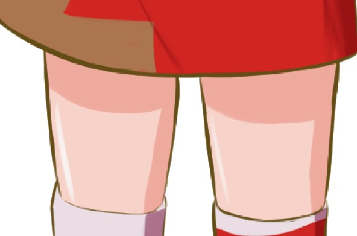

ตอนเด็กๆ ที่พอวาดภาพ แล้วพอลงสีเสร็จแล้ว รู้สึกว่ามันไม่สวย เหมือนมันมีอะไรขาดหายไป
วันนี้ผม ต้า จะมาแนะนำวิธีง่ายๆ 3 อย่างที่ใครๆก็ทำได้ ที่ผมใช้ตั้งแต่เด็กจนปัจจุบันก็ยังใช้อยู่ ที่พอทำแล้วจะทำให้รูปภาพตัวละครที่คุณวาดดูสวยขึ้นครับ
นี่คือภาพที่ผมเตรียมไว้ครับ
เอาล่ะครับ เรามาเริ่มกันเลยครับ
1. ใส่เงาครับ
การใส่เงา จะทำให้ภาพของเรามีมิติขึ้นครับ เป็นการเปลี่ยนภาพของเราที่วาดจาก 2D ให้กลายเป็น 3D
ก่อนอื่นเลย เราจำเป็นต้องกำหนดทิศทางของแสงก่อนครับ รอบนี้ผมจะกำหนดให้ลูกกลมๆนี่ของผมปล่อยแสงออกมา แล้วเราก็จะเป็นเงาได้ครับ
ก่อนอื่นเลยในทุกครั้งที่เราใส่เงามีอยู่ตำแหน่งหนึ่งที่ผมอย่างให้ใส่ก่อนเลย นั่นคือ คอครับ เวลาเราลงสีเงาสำหรับมือใหม่ ผมแนะนำให้ใช้สีชมพู แดงๆ หน่อยๆ ไม่ใช้สีดำนะครับ เพื่อให้มันสีมันดูไม่จืด
ต่อมาคือ ใส่เงาในดวงตาครับ ที่นี่อาจจะเป็นที่หนึ่งที่หลายๆคนลืมใส่กัน แต่การใส่เงาในตาจะให้ตาเราดูมีมิติขึ้นครับ
การใส่เงาบางครั้งเราอาจจะไม่จำเป็นต้องนึกถึงความเป็นจริงมากเท่าไร เพราะว่า มันคือตัวการ์ตูน มีหลายครั้งที่ผมคิดถึงความเข้ากันได้ของลายเส้นมากกว่าความเป็นจริงครับ
แล้วก็ใส่มันเยอะมากไป ภาพก็จะดูเพี้ยนได้ สำหรับมือใหม่ก็ให้เอาตามผมแบบพอเหมาะๆ ครับ
พอใส่เงาเสร็จแล้วจะได้ประมาณนี้ครับ
เสร็จแล้วครับ สำหรับส่วนของเงา
2. ปรับความหน้าของเส้นครับ
การปรับความหนาของเส้นวาด โดยการเพิ่มน้ำหนักของเส้นลงไปในภาพ จะช่วยทำให้ภาพของเราดูดีขึ้นครับ
โดยนี่คือเส้นในตอนแรกของเรา
ส่วนนี่คือ เส้นเมื่อเราเพิ่มน้ำหนักแล้วครับ
สำหรับใครที่ใช้ Clip studio paint จะมีเครื่องมือ ที่ชื่อว่า correct line width
โดยจะสามารถ เพิ่มขนาด ของหัว brush ที่เราวาดลงใน vector layers ได้ครับ
- โดย Thicken - Narrow จะเป็นเพิ่มขนาดขึ้นโดยที่ จะยึดเปอร์เซ็น ความแรงกดที่เรากดลงไปในแต่ละช่วง
- ส่วน Scale up width - Scale down width จะเป็นการเพิ่มขนาด ที่ ละ px ในทุกๆส่วนที่เรากดใช้ครับ
พอเสร็จแล้ว เราจะได้อะไรแบบนี้ครับ
3. ใส่ไฮไลท์ครับ
เมื่อมีเงาแล้วก็ต้องมีการใส่ไฮไลท์ครับ จุดไฮไลท์ คือจุดที่แสงส่องมาถึงมาโดนมากที่สุด แล้วก็สะท้อนกลับมาหาเราครับ โดยขึ้นอยู่กับคุณสมบัติ ของวัตถุ ด้วยครับ อย่างเช่นผ้าบางชนิด ทืบแสง จึงไม่สามารถสะท้อนได้ แต่ว่า ผมกับผิว สามารถสะท้อนแสงได้ จึงเกิด ไฮไลท์ครับ
โดยสีของไฮไลท์ จะขึ้นอยู่ครับสีที่ส่องมาครับ โดยรอบนี้ผมกำหนดให้สี เป็นสีขาว ไฮไลท์จึงเป็นสีขาว ส่วนสีผมเป็นสีน้ำตาล จึ่งเกิดมาเป็นสีน้ำตาลอ่อนครับ

และนี่คือภาพเมื่อเสร็จแล้วครับ
และนี่ก็เป็นทริคง่ายๆ 3 อย่าง ที่ใครๆก็ที่ใครๆก็ทำได้ ที่จะทำให้ภาพของคุณสวยได้ครับ
นี่เป็นบทความสำหรับมือใหม่ เพราะงั้นผมจึงพยายามเขียนให้ทุกคนอ่านง่ายๆ หากมีคนสนใจ สามารถบอกผมได้ครับ รอบหน้าผมจะสอนลงลึกไปกว่านี้